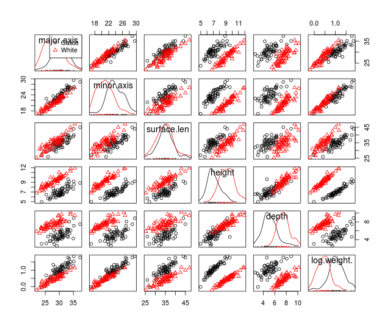
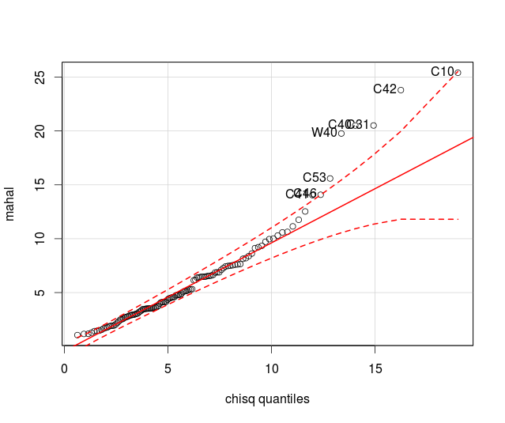
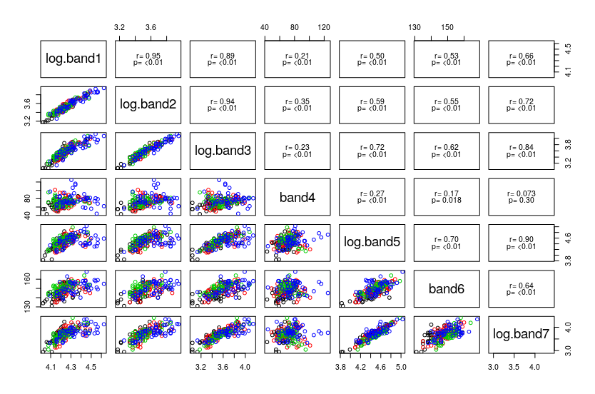
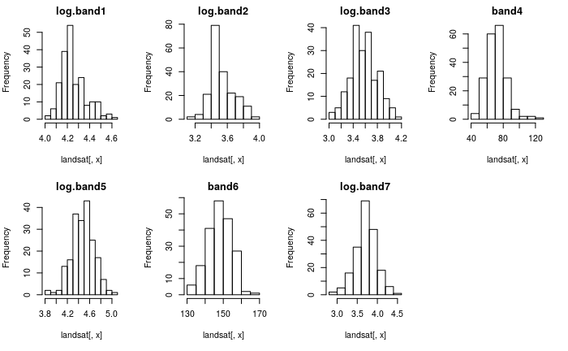
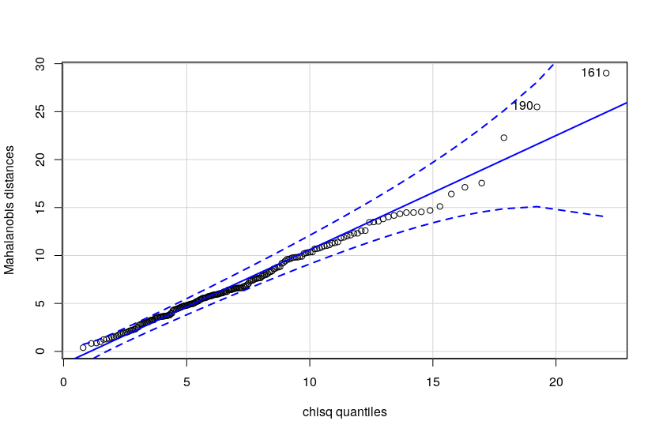
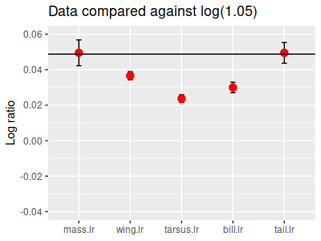

Today we'll compare multivariate differences between our two shell types, and between the four different land cover types in the LandSat data. Both of these will be independent samples analyses, equivalent to one-way ANOVA but with multiple response variables (and thus, MANOVA).
We will focus in this exercise on the omnibus test of significance that we get from our MANOVA - that is, the test of multivariate differences between groups. We will not follow up with post-hoc procedures today, either in the sense of identifying which groups differ from one another (when there are more than two), or which response variables are responsible for the significant differences - learning to do post-hocs on a significant MANOVA will wait until the next exercise.
Make a new project for today, download this data file and this Rmd file into it.
The MANOVA procedures we will use today assume multivariate normality, and as we learned in our data screening exercise these data sets violated that assumption. To get the data sets to meet the assumptions of our tests, I did the following things:
Shell data
Re-measured several shells that had big Mahalanobis distances.
Randomly removed several shells from the data set to use as a "test" set for later analysis (except for one huge white shell that I removed intentionally - its morphology was quite different from the rest), leaving 60 shells per group.
Log-transformed weight.
The scatterplot matrices also look good, but we fail to meet multivariate normality, as you'll see here. Based on the good looking scatterplot matrices, with no apparent non-linearities or major univariate or bivariate outliers, we will move forward and will use Pillai's Trace as our test statistic to account for violating the multivariate normality assumption.
LandSat data
Removed several points that were outliers. Even though there isn't a possibility that these were measurement errors per se, the points had high values on all of the bands, which means that light was bouncing off of a reflective surface on the ground straight back at the sensor.
Randomly selected several points to use as a "test" set for later analysis, leaving 50 points per cover type in today's data set.
The scatterplot matrix looks okay, as you'll see here. The histograms of the bands look reasonably bell shaped, as you can see here. With the oddball points deleted we meet multivariate normality and equality of covariance assumptions, as you'll see here.
Bird sexual size dimorphism data
We didn't collect any of our own multivariate paired data, but we can try out multivariate paired analysis using the bird sexual size dimorphism data we saw in lecture.
1. Import the data and get your list of response variables.
The data set is called "multivariate_data_fixed.xlsx", and the sheet is "shells" - import the data into a data set called shells (don't forget to convert to a data frame). Do this in chunk import.shells.
The variable names are major.axis, minor.axis, surface.len, height, depth, and ln.weight - put these into a vector called shell.variables, in chunk shells.response.variables.
2. Conduct the MANOVA. Since we already graphed these data when we screened them we'll skip that (very important!) step of analysis and move straight to the MANOVA.
MANOVA uses a matrix of response variables, but the syntax is otherwise just like the univariate analysis. We ran a MANOVA when we screened the data in order to get residuals, so you've seen this command before, but this time we'll do the analysis for real (chunk shells.manova):
manova(as.matrix(shells[shell.variables]) ~ shell.type, data = shells) -> shells.manova
This command fits the model, using a matrix of response variables instead of a single one. To get the MANOVA table with the default Pillai's Trace test statistic, below the manova() command (same chunk) enter:
summary(shells.manova)
You'll get this table:
Df Pillai approx F num Df
den Df Pr(>F)
shell.type 1 0.97442 717.38 6 113 <
2.2e-16 ***
Residuals
118
---
Signif. codes: 0 ‘***’ 0.001 ‘**’ 0.01 ‘*’ 0.05 ‘.’ 0.1 ‘ ’ 1
The p-value is tiny, so we reject the null hypothesis that the mean of every response variable is equal between the shell types.
R uses Pillai's Trace as its default, because it performs similarly to the other multivariate test statistic options when we meet normality and equal covariance matrix assumptions, but performs better when those assumptions are violated. Since we know we have some cases with Mahalanobis distances outside of the confidence band we should definitely use Pillai's Trace.
There are only two groups being compared here, so we know that they are different based on this result. We don't yet know whether they are different on every variable, and they could be different on as few as one variable out of the six. We will learn next week how to find out which of the variables are responsible for the difference.
We'll be using the LandSat data as our example of a MANOVA with more than two groups. We have seven measured variables (bands 1-7), and six different cover types, and we'll be testing whether there is significant variation in means of bands (centroids) among the cover types. Remember that in MANOVA differences among group centroids are assessed by partitioning the generalized variance into between-groups and within-groups pieces, then testing whether the ratio of within-groups to total variance is significant.
1. To begin, import the landsat worksheet into a data frame called landsat.
2. Prepare the data. LandSat data comes in seven bands, and to get the data to meet the assumption of multivariate normality each of the bands except for Band4 and Band6 needed to be log-transformed.
I would have provided you with the log-transformed versions of the variables to save some time, but I just learned a command I want you to know about that makes these calculations a little easier, called transform(). In the Console enter:
transform(landsat, ln.band1 = log(band1))
You'll see that a column called ln.band1 has been added as the last column in the landsat data set - we identify the data set name as the first argument, and then give the name of a variable that will receive the transformed data (ln.band1) along with the transformation to use. We can do all of the transformations we want to do in a single command - in the Console enter:
transform(landsat, ln.band1 = log(band1), ln.band2 = log(band2), ln.band3 = log(band3), ln.band5 = log(band5), ln.band7 = log(band7))
You'll see that this appends a log-transformed column for bands 1, 2, 3, 5, and 7 to the end of the landsat data set. All we need to do now is to replace the old landsat data set with the new one that includes these additional columns - in the landsat.transforms chunk enter:
landsat <- transform(landsat, ln.band1 = log(band1), ln.band2 = log(band2), ln.band3 = log(band3), ln.band5 = log(band5), ln.band7 = log(band7))
This puts the output of the transform() command back into the landsat data set, which replaces the old version of landsat with the updated one.
3. Make a list of response variables. Make a landsat.variables list with the log-transformed bands, and with band4 and band6 un-transformed (chunk landsat.make.response.list) - call the list landsat.variables.
4. Run the MANOVA. The MANOVA is just like the one you did for the shells (chunk landsat.manova):
manova(as.matrix(landsat[landsat.variables])~cover.type, data = landsat) -> landsat.manova
The MANOVA model is fitted and assigned to landsat.manova, and we can get the MANOVA table in the next step.
5. Obtain the MANOVA table and p-value. To generate an ANOVA table with a hypothesis test and p-value, type (landsat.manova, next line):
summary(landsat.manova)
The MANOVA table looks like this:
Df Pillai approx F num Df
den Df Pr(>F)
cover.type 3 0.66146 7.7583 21 576 < 2.2e-16
***
Residuals
196
---
Signif. codes: 0 ‘***’ 0.001 ‘**’ 0.01 ‘*’ 0.05 ‘.’ 0.1 ‘ ’ 1
There is a significant difference between at least two of the cover types in at least one of the bands base on
this. A more detailed, post-hoc analysis will have to wait until next week.
We will be working with data on sexual size dimorphism in birds for this example (the same example used in lecture). Import the "bird_ssd" worksheet from your Excel file, into a data frame called "birds".
There are 1,366 species in the data set, but if you click on the birds object in your environment it will open up for you to scroll through. You'll see the data are arranged with male measurements indicated by an m in the column names, and the female measurements indicated by an f.
1. Confirm that the differences are right skewed. In lecture I showed you histograms of the differences and they were right skewed, but let's check that now that we have the data in hand.
First, make a list of the male variables and the female variables that you can use in your calculations. The measurements are mass, wing, tarsus, bill, and tail for each sex, so the male list will be (make.variable.lists.by.sex chunk):
male.variables <- c("m.mass","m.wing","m.tarsus","m.bill","m.tail")
Now make a female.variables list as well (same chunk, next line) - make sure the female variables are in the same order as the male variables, so that you will be subtracting masses from masses, wings from wings, and so on, when you calculate the differences between the sexes.
Next, to calculate the differences between males and females use the command (calculate.diffs chunk):
birds[male.variables] - birds[female.variables] -> diffs
If you open diffs you'll see that the male variable names were used to label the output - these are actually differences between the sexes, so the names are not entirely accurate. You can re-name the columns in diffs by making a list of names (one for each of the 5 columns, chunk names.of.diffs):
diff.names <- c("mass.diff","wing.diff","tarsus.diff","bill.diff","tail.diff")
and then assigning them as the names of the columns (chunk rename.columns.diffs):
colnames(diffs) <- diff.names
Now you can use an lapply() command to make your histograms, using diff.names as the first argument (hists.of.diffs chunk). Try this yourself, but click here to see the command if you get stuck.
The graphs are pretty strongly right-skewed.
2. Prepare the data for analysis. Log-transformation is our first choice to treat a right-skewed variable, but we have a problem in that some of the differences are 0 (no dimorphism between sexes - the sexes are monomorphic) or negative (males smaller than females - the species has reverse sexual size dimorphism). Since the logs of 0 and negative numbers are undefined we can't log-transform the differences, so we'll have to fix the right skew some other way.
Another approach would be to take the log of the variables first before taking the differences - since all of the measurements have positive non-zero values all of the logs would be defined. We could then subtract the log of the female measurements from the log of the make measurements to use as our differences.
If you recall, the difference between logs is equivalent to the ratio of the numbers on the original data scale, so log(m.mass) - log(f.mass) is the same as log(m.mass/f.mass). The null hypothesis we want to test is that the males equal the females, which would give us male/female ratios of 1. Since the log of 1 is 0 the null hypothesis is still that the mean of the log ratios is equal to 0 - we can do the usual paired analysis on the logs of the ratios of male to female measurements.
Calculate the log of the ratios with (in the bird.log.ratios chunk):
log(birds[male.variables]/birds[female.variables]) -> bird.log.ratios
If you open bird.log.ratios you'll see that it too has columns labeled for the male variable names again. Do the column re-naming routine again for bird.log.ratios, but this time use names like "mass.lr", with lr indicating "log ratio" - click here to see the command if you get stuck.
Make the histograms for the bird.log.ratios in the bird.log.ratios.histograms chunk - you've done this a few times, but click here to see the command if you get stuck.
You'll see that they are, mostly, bell-shaped - since tail.lr ist still skewed we should continue to use Pillai's Trace as our test statistic.
3. Conduct the test. The general syntax for a paired analysis using manova() is the same as we used for the two-sample test we just used with the shells, but now we want to compare the means of differences against 0 instead of comparing group means to one another.
To get a comparison of group means to 0 use (chunk paired.manova):
manova(as.matrix(bird.log.ratios) ~ 1) -> bird.paired.manova
This fits the MANOVA as an intercept-only model. We can see what the intercepts are with (same chunk, next line):
coef(bird.paired.manova)
which will give you:
mass.lr wing.lr tarsus.lr bill.lr tail.lr
(Intercept) 0.04954856 0.03661648 0.02371554 0.03000172 0.04953044
When there are no predictors in a model the intercepts are the means of each lr column. Intercepts are tested against 0, so the multivariate intercept test for this model is a test of every mean of the log ratios against 0; the intercept test in an intercept-only model of differences (or log ratios) between pairs of observations is thus a multivariate paired analysis.
To get the MANOVA table enter (in paired.manova.test):
anova(bird.paired.manova)
Note that we used anova() instead of summary() here - using summary() on the fitted model suppresses the test of the intercept in the MANOVA table. Normally this is fine since we don't interpret the intercept in a normal MANOVA, but for a paired analysis the intercept test is exactly what we need, and we have to use the anova() function to get it. You will see:
Analysis of Variance Table
Df Pillai approx F num Df den
Df Pr(>F)
(Intercept) 1 0.43711 211.38 5 1361 <
2.2e-16 ***
Residuals
1365
---
Signif. codes: 0 ‘***’ 0.001 ‘**’ 0.01 ‘*’ 0.05 ‘.’ 0.1 ‘ ’ 1
The intercept is statistically significant, which means that at least one of the log ratio variables is significantly different from zero - the sexes differ on at least one of the variables.
One-sample testing
A paired MANOVA is a one-sample test of differences between pairs against null values of 0 for every variable. We can use this approach for any one-sample test, but we would need to specify the null values for the variables.
For example, if we wanted to test the hypothesis that male birds are 5% larger than female birds on average, the null hypothesis is that the ratio of male to female measurements is 1.05.
This hypothesis is illustrated in the picture to the left - the mean log ratios for each of the five variables are being compared against the null value of log(1.05), which is equal to 0.0488.
The problem is that there isn't an argument in the MANOVA function that we can use to specify the null values for the intercepts. But, if you click on the graph you'll see that we can accomplish the same thing by subtracting log(1.05) from the data, and then testing the differences against 0.
We can do this within our MANOVA command, with a slight modification from the one we used for the paired analysis. You can try this in the Console:
coef(manova(as.matrix(bird.log.ratios - log(1.05)) ~ 1))
which gives you:
mass.lr wing.lr tarsus.lr bill.lr tail.lr
(Intercept) 0.0007583932 -0.01217368 -0.02507462 -0.01878844 0.0007402792You'll see that the (Intercept) coefficients are now the mean amount of difference from log(1.05) for each variable - that is, they are 0.0488 units less than the intercepts you got above.
Wrapping the manova() command inside an anova(), instead of coef(), gives us (still in the Console):
anova(manova(as.matrix(bird.log.ratios - log(1.05)) ~ 1))
gives you:
Analysis of Variance Table
Df Pillai approx F num Df den Df Pr(>F)
(Intercept) 1 0.38944 173.62 5 1361 < 2.2e-16 ***
Residuals 1365which shows that the male/female ratios are significantly different from 1.05. This basic approach can be used for any one-sample null that you want to test (although if you had different null values for the means you would need a matrix of those null values to subtract from the data - this simpler approach worked because we were subtracting the same number from every data value).
4. Interpret the differences. Remember that the point of the analysis is to compare between the two sexes. Our "differences" are actually the logs of ratios. To interpret how males and females differ we need to back-transform the intercepts (which are the means of the log-ratios for each variable) with (back-transform.mean.diffs chunk):
exp(bird.paired.manova$coefficients)
which gives you:
mass.lr wing.lr
tarsus.lr bill.lr tail.lr
(Intercept) 1.050797 1.037295 1.023999 1.030456 1.050778
The exp() function reverses the log transformation, and gives us the geometric mean ratio of male to female sizes for each variable - in each case on average males are larger than females, because the ratios are over 1. Since these are male data divided by female data, the ratios tell you how many times larger the males are than the females - males are between 2.3 and 5.1% larger than females on all of the variables. Since these are multiples they don't have units.
That's it! Knit and upload your Word file to the course web site.